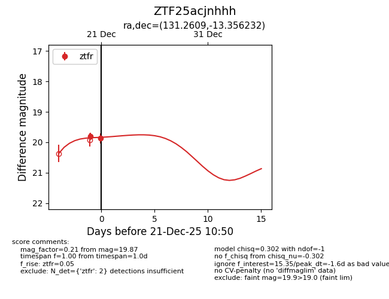
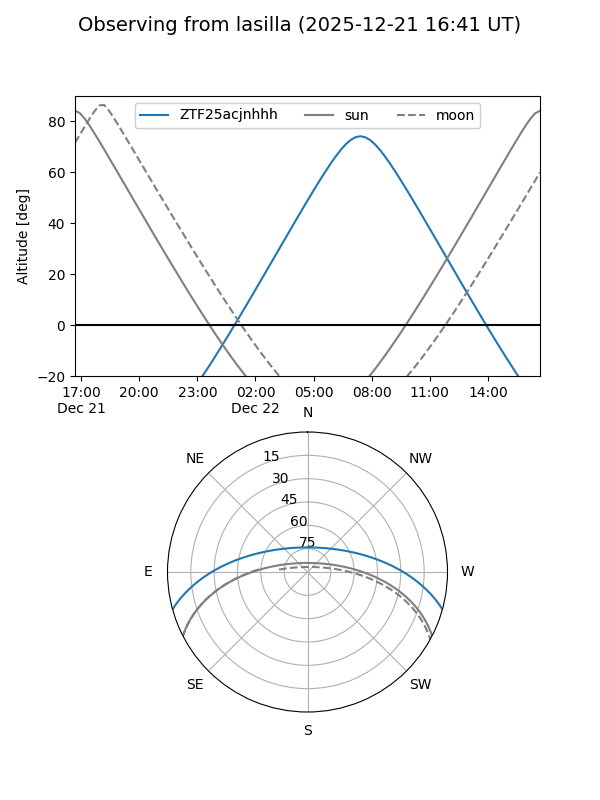
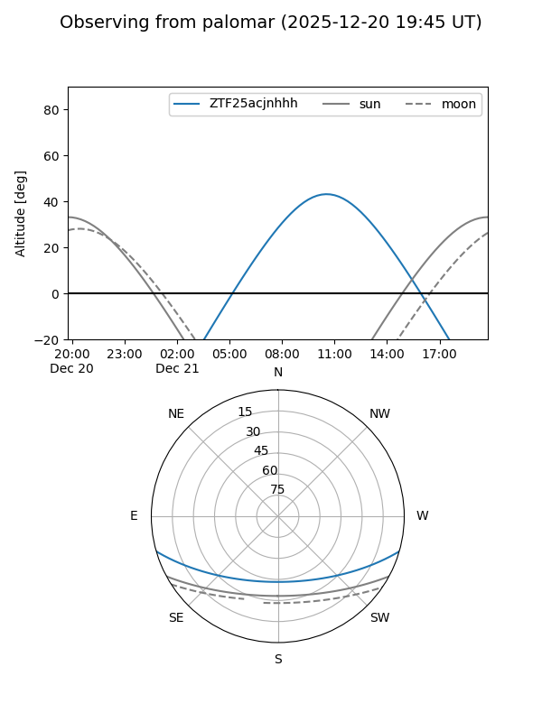
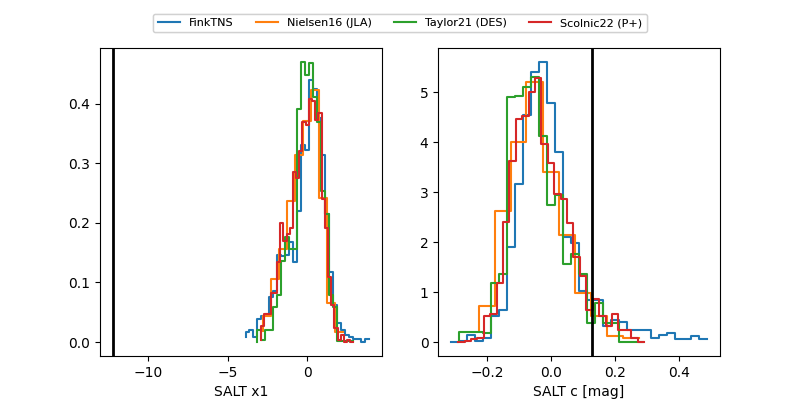

ZTF25acjnhhh
Target ZTF25acjnhhh at 2025-12-21 10:52
Aliases and brokers:
FINK: fink-portal.org/ZTF25acjnhhh
Lasair: lasair-ztf.lsst.ac.uk/objects/ZTF25acjnhhh
ALeRCE: alerce.online/object/ZTF25acjnhhh
alt names
ZTF25acjnhhh (ztf,fink_ztf)
Coordinates:
equatorial (ra, dec) = 131.2609,-13.35623
equatorial (HMS+DMS) = 08:45:02.61,-13:21:22.44
galactic (l, b) = (238.8880,+17.85053)
Flags:
Photometry:
last ztfr=19.87
2 ztfr detections
Lightcurve

Visibility


Additional plots
